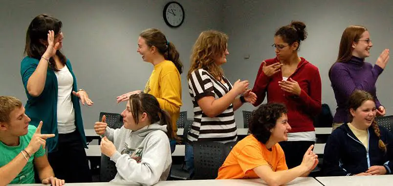

Mundo Silencioso: Recursos e Informações sobre Surdez

A surdez consiste na perda maior ou menor da percepção normal dos sons. Verifica-se a existência de vários tipos de pessoas com surdez, de acordo com os diferentes graus de perda da audição. Sob o aspecto da interferência na aquisição da linguagem e da fala, o déficit auditivo pode ser definido como perda média em decibéis, na zona conversacional (freqüência de 500 – 1000 – 2000 hertz) para o melhor ouvido.
Graus de perda da audição?
- Leve: dificuldade em ouvir sons abaixo de 30 decibéis. Algumas vogais e consoantes podem não ser identificadas.
- Moderada: incapacidade para ouvir sons abaixo de 50 decibéis. O paciente é capaz de ouvir apenas alguns ruídos mais altos, como o barulho do movimento de um liquidificador ou o choro de uma criança,
- Severa: insuficiência auditiva para sons abaixo de 80 decibéis. Nesse caso, o paciente já não consegue ouvir a fala humana e nem o toque do telefone com volume alto.
- Profunda: ausência total de audição ou incapacidade de ouvir sons abaixo de 95 decibéis. A comunicação interpessoal ocorre com linguagem gestual ou técnicas de leitura labia.
Quais as causas da perda da audição?
- Ruptura ou perfuração do tímpano
- Doenças como esclerose múltipla, lúpus, doença de Paget, meningite, doença de -Ménière, pressão alta ou diabetes
- Otites frequentes
- Ruído excessivo
- Envelhecimento
- Presença de líquido ou objetos estranhos no ouvido
- Excesso de cera
- Traumas no ouvido
- Presença de tumores
- Medicamentos
- alcoolismo e tabagismo
Língua Brasileira de sinais
A Língua Brasileira de Sinais (Libras) é língua reconhecida por lei no Brasil desde 2002. Ela é uma língua completa (e não linguagem), com estrutura gramatical própria. Na Libras, por exemplo, não existem tempos verbais ou artigos – a organização das informações é totalmente diferente do português. Não só os sinais são importantes, mas também as expressões faciais e corporais. Dependendo do sinal, ele pode ser igual nas mãos, mas com uma expressão diferente, ele pode mudar todo o sentido de uma frase.
História da Libras
Um fato interessante sobre o desenvolvimento da Língua Brasileira de Sinais é que ela teve forte influência da Língua de Sinais Francesa. Isso porque ela utiliza como base os mesmos métodos criados pelos franceses no final do século XVIII. Inclusive, Eduard Huet, um ativista com atuação importante na luta pela educação de pessoas surdas e deficientes auditivas, veio para o Brasil em 1857 a convite de D. Pedro II. Assim, foi fundada a primeira escola para surdos do país e que ficou conhecida como Imperial Instituto de Surdos Mudos (esse termo hoje em dia é considerado pejorativo, mas no passado era muito comum).
No entanto, em 1880, uma determinação do Congresso de Milão apontou que a comunicação por leitura labial seria a melhor forma de se comunicar com os surdos, o que atrasou consideravelmente sua difusão no país. Na época, médicos e cientistas acreditavam em uma possível cura para surdez. Por esse motivo, o oralismo se tornou a forma de comunicação oficial no Instituto e outras escolas para pessoas surdas no país, o que acabou tornando a língua ainda mais marginalizada. Apenas no final dos anos 1980 que surgiram grupos exigindo uma medida que trouxesse mais inclusão dessa comunidade.
Cultura Surda
A cultura surda nasceu da comunidade surda, de forma natural e espontânea. São pessoas que possuem a visão como principal sentido para traduzir o mundo. Sua experiência de vida acontece através de percepções visuais, com influência das Línguas de Sinais e das vibrações sonoras, que podem ser sentidas. Você já deve ter reparado que as pessoas que se comunicam através da Libras fazem bastante expressões faciais, certo? Isso porque elas são fundamentais para auxiliar na compreensão da mensagem que está sendo transmitida. Elas também são muito boas em ler essas expressões e identificar sentimentos verdadeiros.
Assim como qualquer cultura e língua, a cultura surda e a Libras não são universais e variam de acordo com a região e país. Isso mesmo! Existem muitas Línguas de Sinais no mundo. No Brasil, a Libras possui regionalismos, ou seja, alguns sinais variam de Norte a Sul. Além disso, ela é uma língua viva e sofre alterações com o tempo, assim como o Português. Isso mesmo, uma língua e não uma linguagem, ok?!
Outra curiosidade é que as pessoas surdas fazem o batismo de sinais. Isso significa que cada uma ganha um sinal em Libras, que é o equivalente ao RG, ou identidade, um sinal que se refere a este alguém e normalmente está relacionado a características físicas marcantes. As pessoas ouvintes também podem ganhar um sinal, desde que ele seja dado por uma pessoa surda, no tempo determinado por ela. Não é uma prática legal, pedir seu sinal, é importante respeitar o momento certo que ela achar adequado para te batizar.